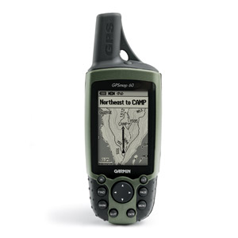

GPSmap 60
Én egy GPSMAP 60 készülékkel rendelkezem, és ezzel kapcsolatos specifikus információk találhatóak itt.
Az eszköz nem támogatja a USB Mass Storage Mode-ot.
Térképkezelés
A sendmap nálam nem működött, egyszerűen nem látta a GPS-t. A hibaüzenet:
Cannot connect to GPS - check if cable is connected and GPS is turned ON
A térképek feltöltése a QLandkarte GT alkalmazással zökkenőmentesen működött.
GPS adatok kezelése
A GPS adatok fel- és letöltése a GPSBabel alkalmazásból tökéletesen ment. Azonban sajnos a QLandkarte GT nem tudta az útpontokat fel- és letölteni sem. Valami kódolási probléma lehet, ugyanis a letöltésnél az útpontok nevének elejét levágta. Feltöltéskor meg sem jelentek az eszközön. Az útvonallal és nyomvonallal kapcsolatosan nem voltak problémák. Ha a GPS eszközön a geoládák vannak kiválasztva, és a GPSBabellel töltök fel újakat, azok azonnal megjelennek a GPS képernyőjén anélkül, hogy bármilyen gombot is nyomni kéne.
Munkafolyamat
Az útvonalpontok fel- és letöltésével kapcsolatos probléma miatt a munkafolyamat kicsit bonyolultabb. Először letöltöm a Geocaching.hu-ról a ládákat, melyet betöltök a QLandkarte GT-vel. Majd megtervezem az útvonalat, és kimentem .gpx-be. Ezt a GPSBabellel töltöm fel a GPS-re. A térképet a QLandkarte GT-vel töltöm az eszközre. A túrázás után a nyomvonalat szintén GPSBabellel töltöm le (hogy az esetlegesen a GPS-en felvett pontok is helyesen jelenjenek meg), és ha kell utófeldolgozom a Qlandkarte GT-vel (pl. nyomvonal vágása).
